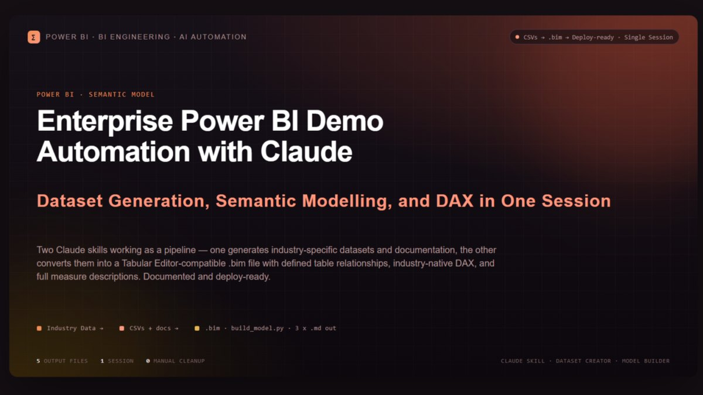
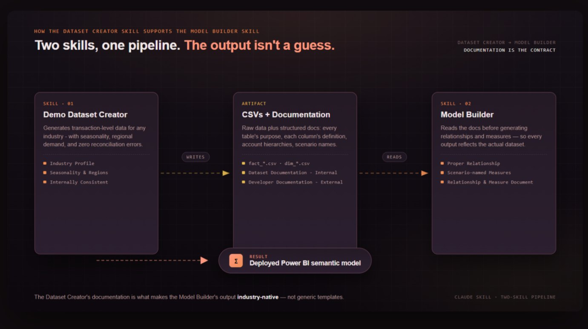
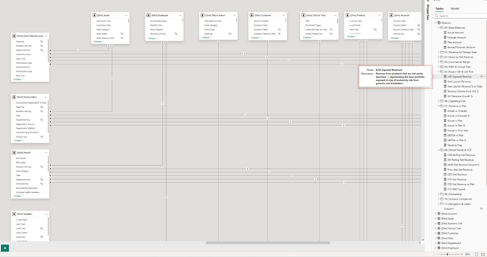

Enterprise Power BI Demo Automation with Claude - Dataset Generation, Semantic Modelling, and DAX in One Session
Logeshkumar Sivakumar · May 12, 2026 · 6 min read

No enterprise client is convinced by generic data. Building a convincing Power BI demo involves two separate problems.
First: Creating industry-specific data that reflects the client's actual business - realistic P&L accounts, regional demand patterns, multi-entity structures, and variance that makes sense.
Second: Building a semantic model behind that data - relationships, DAX measures, display folders, descriptions. Together, they consumed 6–8 hours every time a new demo was needed. With multiple client verticals to cover and a lean team, that time adds up fast.
I automated both steps with Claude.
Who This Is For
This is relevant if you prepare Power BI demos for enterprise clients, run a lean BI team across multiple functions, or handle pre-sales preparation alongside delivery work. If you start from scratch for every engagement, this changes that.
What This Skill Do
Claude can be given a saved set of instructions - a reusable file that tells it exactly how to approach a specific task, what rules to follow, and what to deliver. Think of it as writing an SOP your assistant reads and applies consistently, every session, without being re-explained.
I built two such instruction sets that work as a connected pipeline:
- Demo Dataset Creator - generates transaction-level data files for any industry. It applies realism rules that most generated datasets skip: no macro-region as a leaf node, country-level naming conventions matched to local demographics, regional product demand patterns, seasonal variation, and zero reconciliation errors across all connected value pairs - actuals vs plan, inventory in vs out. Alongside the data, it produces structured documentation files describing every table, column, and account in detail.
- Model Builder - reads both the data files and the documentation the Dataset Creator produced, then generates a complete, deploy-ready Power BI semantic model (a semantic model is the data structure behind a Power BI report it defines tables, relationships, and DAX calculations, description, Organise Measure as tables ready to create report).

Why This Exists
My role covers internal BI reporting, sales support, QA and demo preparation - functions previously distributed across a larger team. Demo files are a recurring requirement: for the company website and for enterprise client presentations. What used to take 6–8 hours of manual work per engagement - dataset design, model build, DAX, documentation - now completes in under 30 minutes.
What the Model Builder Produces
Running the skill generates five files in one pass:
- model.bim - A Tabular Editor 3-compatible file (Tabular Editor is an open-source tool for building and editing Power BI semantic models outside of Power BI Desktop) containing every table, column, relationship, and measure, fully described and ready to deploy
- build_model.py - The Python script that generates all outputs, rerunnable without starting over
- measures_reference.md - A reference table listing every measure with its folder, format string, business description, and full DAX (DAX - Data Analysis Expressions is the formula language used to write calculations in Power BI)
- Two documentation files - A guide for report developers and an internal technical reference
How to Deploy Model in Power BI
Disable TMDL: In Power BI Desktop, Go to File > Options and settings > Options > Preview features in Power BI Desktop and ensure “Store semantic model using TMDL format” is unchecked so it uses the .bim structure.
Save File: Save the File in Pbip format
Locate Folder: Open your .pbip directory on your computer and find the semantic model folder (named [YourProjectName].SemanticModel ).
Replace File: Paste your updated .bim file into that folder, making sure it overwrites the existing model.bim file.
What Makes the Model Industry-Specific
The Model Builder reads the documentation files the Dataset Creator produces before generating a single relationship and measure - a public guide and an internal reference that record every table's purpose, each column's business definition, the full account hierarchy, and the exact scenario names used in the dataset.
That is what makes the output industry specific, from creating relationship, what measures are created and what they are called. Without that documentation, the Model Builder works from column names alone - functional, but shallow. With it, every measure reflects the actual dataset built for that engagement.
Measures are organized into numbered display folders - "01 | Revenue", "02 | Margins", "03 | Variance" - each carrying a business-first description that states what the measure answers, which direction signals improvement, and the industry benchmark where one exists. These appear as tooltips in Power BI's field list. The documentation the Dataset Creator wrote becomes the intelligence the Model Builder delivers.

When to Use This
This pattern fits when demo frequency is high and team size is lean. It is not a replacement for production data engineering. For pre-sales demonstrations and internal reporting demos, it removes the model-building step that adds no client-facing value.
Real-World Context
When I ran this for an APAC enterprise demo, the client's team worked with multi-entity P&L consolidations across regional cost centers - a structure that a generic Contoso dataset cannot reflect. The Dataset Creator produced data aligned to that structure: entity-level variance, multi-currency values, and cost-center breakdowns. The Model Builder read that data and the documentation alongside it, and generated measures named to match their chart of accounts. The demo ran on data that looked like theirs. That change in perception is the difference between a client evaluating a product and a client seeing themselves in it.
Conclusion
I built this to solve my own problem. What started as a personal fix became a workflow that scales - same quality output regardless of industry, client size, or how many engagements are running in parallel.
Building something similar or want to compare approaches? Drop a comment or connect -happy to walk through how I structured the pipeline. Find the skill file below.
🔗 Comment below to receive the GitHub repository.
A Note on AI-Assisted Workflows
Every file this pipeline produces goes through manual review before it is used in a demo. The dataset, bim structure, DAX logic, relationships, and measure descriptions are validated against the actual dataset before deployment.
AI compresses the time between starting and having something to review - it does not replace the review itself. Always validate before sharing. The output is a strong starting point, not a finished product.